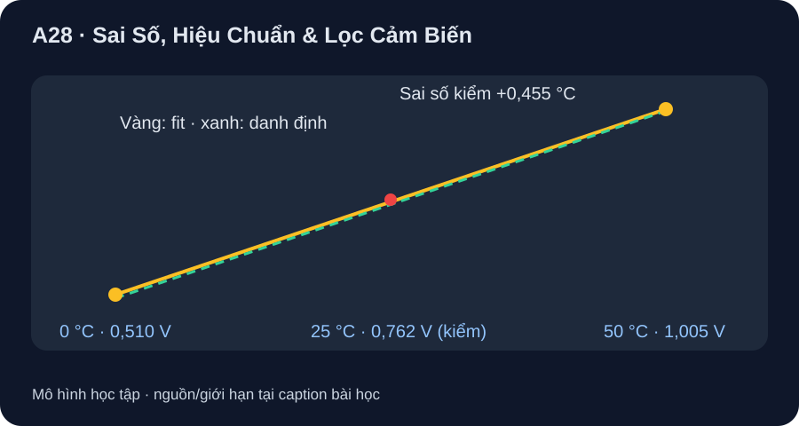

Sai Số, Hiệu Chuẩn & Lọc Cảm Biến
Tách dữ liệu chuẩn, điểm fit và điểm kiểm độc lập trong một phép hiệu chuẩn có thể tính lại.
- Từ bộ dữ liệu giả lập, fit hai điểm TMP36 và tính sai số trên điểm kiểm độc lập.
- Lập ngân sách sai số tách chuẩn, voltmeter/ADC, sensor, mô hình, môi trường và lượng tử hóa.
- Chọn lọc trung bình có giới hạn trễ, giữ raw data và không tuyên bố accuracy thật từ bài giấy.

Đọc hình bằng chữ
Hai chấm dùng để fit là 0 độ C với 0,510 volt và 50 độ C với 1,005 volt. Đường qua hai chấm có độ dốc 9,9 milivolt mỗi độ C và intercept 0,510 volt. Chấm kiểm 25 độ C với 0,762 volt nằm lệch đường fit: dự đoán 25,4545 độ C, sai số cộng 0,4545 độ C. Đường danh định cho 26,2 độ C, sai số cộng 1,2 độ C. Mọi số chấm đều giả định.
1. Nguồn và bộ dữ liệu
ADI TMP36 Rev. H cho mô hình danh định 750 mV tại 25 °C và 10 mV/°C, nên Vnom=0,500+0,010T (V). Bảng sau là dữ liệu tổng hợp do bài học tạo ra, không phải số của một TMP36 đã mua hoặc từ datasheet. Giả định có chuẩn nhiệt độc lập và đồng hồ điện áp, nhưng thiết bị/uncertainty chưa được chọn. Hai đầu mút dùng để fit; 25 °C là điểm kiểm giữ riêng.
| Vai trò | T chuẩn giả định | V đọc giả định | T danh định (V−0,500)/0,010 |
|---|---|---|---|
| Fit thấp | 0 °C | 0,510 V | 1,0 °C |
| Kiểm độc lập | 25 °C | 0,762 V | 26,2 °C |
| Fit cao | 50 °C | 1,005 V | 50,5 °C |
2. Fit và kiểm sai số
b=(1,005−0,510)/(50−0)=0,0099 V/°C; a=0,510 V; mô hình fit V=a+bT. Từ 0,762 V tại điểm giữ riêng: Tfit=(0,762−0,510)/0,0099=25,4545… °C. Sai số có dấu so với chuẩn giả định 25 °C là +0,4545… °C; trước fit là 26,2−25=+1,2 °C. Sai số tuyệt đối trên một điểm kiểm giảm từ 1,2 xuống khoảng 0,455 °C, không chứng minh trên toàn dải hay trên phần cứng. Phần dư điện áp tại 25 °C so với đường fit là 0,762−(0,510+0,0099×25)=+0,0045 V.
3. Ngân sách sai số trước khi đo thật
Ở 10 mV/°C danh định, nếu ADC/voltmeter có sai số ±2 mV trong điều kiện lắp, thành phần tương đương ±0,2 °C theo slope danh định. Đó là giả định bài tập, chưa là thông số ADC Pico hay DMM thật. Sai số TMP36 theo grade/nhiệt, sai số chuẩn nhiệt, điện áp tham chiếu, tải VOUT, tự gia nhiệt, tiếp xúc nhiệt, độ tuyến tính, lượng tử hóa và biến thiên môi trường phải được xét riêng. Không cộng tuyến tính giá trị typical như một worst-case bảo đảm; muốn khoảng tin cậy phải có phân bố/tương quan và phép hiệu chuẩn chuẩn truy xuất. Dữ liệu fit bị ảnh hưởng bởi sai số ở chính hai mốc chuẩn; kiểm 25 °C phải đo độc lập.
4. Lọc và giao tiếp
Với các mẫu số hóa 24,9; 25,4; 25,1 °C (giả định), trung bình cộng là 25,133… °C. Trung bình ba mẫu có thể giảm nhiễu ngẫu nhiên độc lập nhưng tạo trễ, không sửa bias offset hay lỗi cấp nguồn; xung thật có thể bị làm mờ. Giữ raw voltage/code, timestamp, nhiệt chuẩn, cấu hình ADC/reference, phiên bản công thức và giá trị đã lọc. Với sensor số, thêm CRC/status, mode và thời gian đổi số; chỉ đọc dữ liệu mới khi conversion ready. Không dùng bộ lọc để che lỗi bus hoặc chọn sai dải.
Ghi mã TMP36/package/grade và datasheet revision; mã board/ADC/reference; chuẩn nhiệt và bất định; trạng thái ổn định nhiệt; ba lần đọc raw mỗi điểm 0/25/50 °C; hai điểm fit, một điểm kiểm; sai số trước/sau cùng ngày và độ lặp. Nếu không có part và chuẩn, chỉ chạy python tools/verify_phase9_sensors.py để kiểm toán số học của dữ liệu tổng hợp.
Chưa thu dữ liệu từ cảm biến/thiết bị chuẩn thật và chưa chứng minh accuracy sau hiệu chuẩn. Giá trị typical trong datasheet không tự trở thành tiêu chí PASS trên một mẫu cụ thể; quyết định kỹ thuật cần mã đặt hàng, điều kiện thử và reviewer phần cứng.
Từ điểm fit (0 °C, 0,510 V) và (50 °C, 1,005 V), tính a,b. Với điểm kiểm độc lập (25 °C, 0,762 V), tính T và sai số trước/sau; nêu vì sao đây chưa là chứng nhận accuracy. Nếu sai số điện áp giả định ±2 mV, quy đổi xấp xỉ theo slope danh định. Tính trung bình 24,9/25,4/25,1 °C và một hạn chế của lọc.
- 1 điểm: a=0,510 V và b=0,0099 V/°C.
- 1 điểm: Tfit=25,4545… °C, sai số +0,4545… °C; Tnom=26,2 °C, sai số +1,2 °C.
- 1 điểm: số là tổng hợp, chỉ một điểm giữ riêng; còn chuẩn/ADC/sensor/môi trường nên chưa chứng nhận accuracy thật.
- 1 điểm: ±2 mV/10 mV·°C⁻¹≈±0,2 °C dưới giả định slope danh định, không là spec Pico.
- 1 điểm: trung bình 25,133… °C; lọc có trễ và không sửa bias hệ thống.